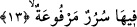
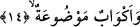

mânâsı orada devamlı akan pınarlar vardır, bunların suları sürekli akar durur, dileyen
kişi o sulardan içer demektir. Bu pınarın suları sütten daha beyaz, baldan daha tatlıdır.
Bundan bir kez içen kimse ondan sonra artık sonsuza kadar asla susamaz ve bu suyu içen
kimsenin kalbinde hile, aldatma, hased, düşmanlık ve kin gibi duygular çıkıp gider.
Bu âyet-i kerimede zevk, keşif, vicdan, tevhid pınarlarına işâret vardır. Çünkü ehl-i
kulûb’un ve ashâbu’l-ervahın şifası, sağlığı, bakası bunlarla hâsıl olur.
13. Orada yükseltilmiş tahtlar,
“Orada” üzerine oturacak oldukları “yüksek tahtlar”vardır. Yani orada tahtlar
üzerinde bir taht, her tahtın üzerinde yüz döşek vardır. Her bir döşeğin üzerinde ise
parlak ay gibi bir hûrî vardır.
Âyette yer alan “sürur” “serîr” kelimesinin çoğuludur. Bu bildiğimiz taht anlamınadır
ve bu tahtların yüksek oldukları havada uzun ayakların üzerinde durdukları ifâde
olunuyor. Bu, tahtların uzun ve yüksek oluşları havada ne kadar yukarlarda olduğunu
vurgulamak içindir. Dolayısıyla mü’min o tahtın üzerine oturduğunda Cennette Rabbinin
kendisine vermiş olduğu büyük nimeti ve büyük mülkü görecektir. Peygamber (s.a.)
Efendimiz: “Mü’minlerin oturacak oldukları bu tahtların yüksekliği gökle yer arası
kadar beşyüz yıllık bir mesâfedir.” [87] buyurmuştur. Rivâyetlere göre Allah dostu bu
tahtlara oturmak için geldiğinde eğilir, üzerine kurulduğunda tekrar dikilip yükselirler.
Yukardaki âyette yer alan “yüksek tahtlar” ifâdesini, değeri yüksek taht olarak
anlamak da mümkündür. Bu takdirde bu tahtlar bütün güzellikleri, bütün mükemmelliği
ve sıfatları kendi bünyelerinde bulundurdukları için değerli ve yüksek olmuş olurlar.
Zira onlar altın, zeberced ve mücevherle süslüdürler.
Harraz (k.s.) der ki; bunlar kendilerine bakıldığında arazların ve kâinâtın
görülmeyeceği derecede yüksek olan tahtlardır. Bu âyette ilahi isimlerin mertebelerine
işâret edilmektedir. Nitekim onlar çalışarak sülûk yolunda bunlarla kendilerini
bezeyerek o mertebelere ulaşmışlardır. Bu mertebelerin değeri cismânî mertebelerden
yüksektir.
14. (Önlerine) konulmuş kadehler,
Bu âyette yer alan ve kadehler anlamına gelen “ekvâb”, “kûb” kelimesinin çoğuludur.
Bundan maksad kulpu ve ucunda emziği olmayan kap demektir. Bu kapların bu şekilde
yapılmış olması cennetliklerin istedikleri taraftan içebilmelerini ve tutabilmelerini